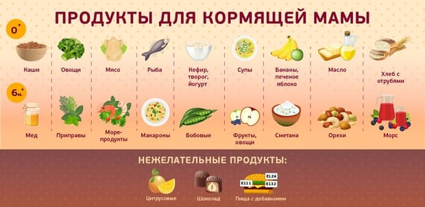
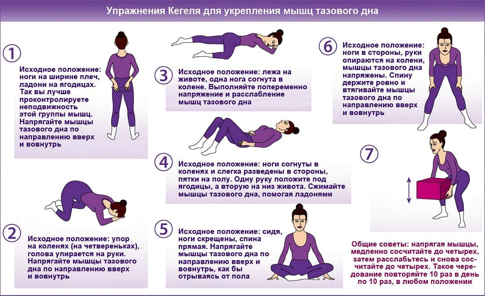
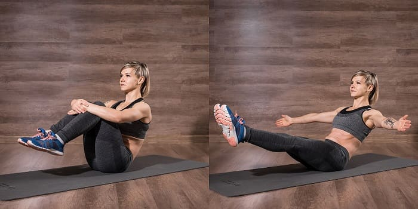
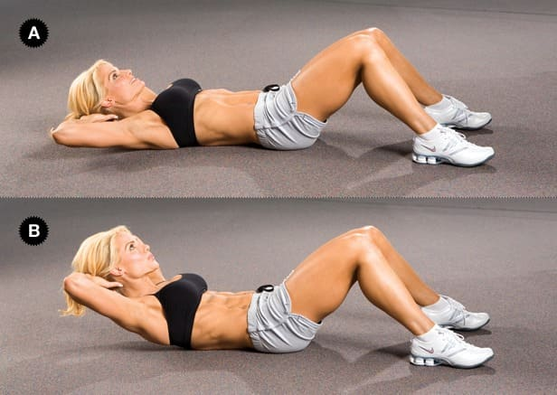

Долгие месяцы после родов ваше тело демонстрирует множество предательских признаков и ощущений, свидетельствующих о том, что вы выносили и родили ребенка. Накопившийся во время беременности лишний жир – совершенно нормальный резервный запас энергии для вас и вашего ребенка – может оставить вас после родов с огорчительными складками. Растянутые мышцы живота не поддерживают спину должным образом, что приводит к болям в спине.
Сбросить вес и укрепить мышцы – важная забота большинства новоиспеченных мам. Главное здесь – терпение и настойчивость.
Вы набирали лишний вес девять месяцев, так будьте готовы к тому, что для того, чтобы безопасно сбросить его, потребуются те же девять месяцев. Кормящим грудью матерям требуется, теоретически, в среднем 500–600 дополнительных калорий в день для обеспечения полноценного питания им самим и их новорожденным. Эти цифры лишь приблизительные. Если у вас был недостаточный вес перед беременностью или во время нее, вам может потребоваться больше калорий, чтобы не произошло истощение вашего организма. Если у вас был излишек веса, может потребоваться меньше калорий, поскольку постепенно расходуются запасы лишнего жира в вашем организме. Несколько проведенных в конце 1980-х годов исследований показали, что метаболические процессы (обмен веществ) во время лактации (выработки молока) ускоряются, потому рекомендуемая суточная норма для кормящих матерей может оказаться завышенной по сравнению с тем, что действительно необходимо. Ключ к потере веса во время грудного вскармливания – найти уровень потребления калорий, подходящий лично вам.

Вот наша безопасная программа похудения при грудном вскармливании, разработанная с учетом здоровья матери и ребенка.
Ориентируйтесь по своим ощущениям – так легче всего определить оптимальное количество калорий, необходимое для вашего здоровья и хорошего самочувствия.
Мы рекомендуем кормящим грудью матерям потреблять в день не менее 2000 имеющих питательную ценность калорий, балансируя между основными пищевыми группами. Меньшее количество калорий большинству кормящих матерей не может обеспечить нормальное здоровье и хорошее самочувствие.
Поставьте себе безопасную и реальную цель. Вашей целью должна быть постепенная потеря веса: в среднем примерно килограмм в месяц; чуть больше, если до беременности у вас был избыточный вес; чуть меньше, если недостаточный.
Выполняйте упражнения в течение одного часа каждый день. Выбрав вид спорта, который вы любите – лучше такой, которым вы могли бы заниматься вместе с ребенком, – вы скорее будете придерживаться обязательных занятий. Очень удобное упражнение для матери и ребенка – это положить ребенка в слинг и отправиться на прогулку как минимум на один час каждый день
. Быстрая ходьба в течение часа с дополнительным весом ребенка сжигает примерно 400 калорий. Это упражнение плюс одним шоколадным печеньем меньше (или его эквивалентом в балластной, не имеющей питательной ценности пище) сжигает примерно 450 г вашего жира в неделю (недостача в 500 калорий в день, или 3500 калорий в неделю, приводит к еженедельной потере веса в размере 450 г). Заниматься упражнениями после кормления более удобно, поскольку ваши груди не такие налитые и тяжелые. Для энергичных упражнений надевайте хорошо поддерживающий бюстгальтер и используйте мягкие подкладки для груди, чтобы уменьшить трение сосков.
По нашему опыту можем сказать, что идеальным спортом является плавание.
Кормящие грудью мамы, находящиеся под нашим наблюдением, поражаются результатами напряженных упражнений, таких как бег и аэробика.
Некоторые женщины отмечают резкое снижение количества молока, если они энергично занимаются более двух дней в неделю. Было установлено, что упражнения, при которых задействуются плечи, такие как прыжки через скакалку, ведут к воспалениям молочных желез, и имеется информация о том, что грудное молоко приобретает после слишком напряженных упражнений неприятный вкус. (Поэтому, помимо того, что после кормления маме удобнее, кормить ребенка перед занятиями также представляется более желательным для ребенка.) Мы советуем каждой кормящей и занимающейся спортом матери держаться за те упражнения, которые наиболее подходят для нее лично.
Фиксируйте свой прогресс. Если вы сбрасываете вес в соответствии с поставленной вами целью, чувствуете себя хорошо, ваш ребенок развивается нормально и молока у вас предостаточно, значит, вы нашли свой оптимальный уровень калорий. Кормящая мать, имеющая «идеальный вес», обычно может потреблять дополнительно 500 калорий в день, не набирая лишнего веса. Эта цифра зависит от типа вашего телосложения и от того, был ли ваш вес до лактации избыточным, нормальным или недостаточным. Если вы теряете больше чем полкило в неделю, вероятно, вы едите слишком мало, и мы посоветовали бы обратиться к вашему врачу или диетологу. Если вы по-прежнему набираете вес, придерживаясь этой программы, вероятно, вы едите слишком много. Подытожим: потребление 2000 несущих питательную ценность калорий в день плюс один час в день комфортных для вас упражнений обычно приводят к снижению веса между одним и двумя килограммами в месяц, что является безопасным для большинства матерей и их находящихся на грудном вскармливании детей.
Возможно, заниматься после родов нужно в первую очередь затем, чтобы хорошо чувствовать себя. Счастливая женщина скорее будет счастливой матерью. Кроме часа любимого вида спорта каждый день, рекомендованного выше, есть множество программ упражнений, которые вы можете выполнять, чтобы помочь мышцам, напрямую пострадавшим от беременности и родов.
Не торопитесь вогнать свое тело обратно в ту форму, которую оно имело до беременности.
Некоторые инструкторы по послеродовому фитнесу рекомендуют не делать никаких специальных упражнений в первые две недели после родов, за исключением упражнений на мышцы таза. Они считают, что мышцы живота сокращаются в первые две недели естественным образом, поэтому большая часть «мышечной работы» выполняется даже при том, что вы думаете, будто ничего не делаете. Просто ходить по дому, занимаясь обычными делами, – достаточное упражнение поначалу.
Когда вы будете готовы приступить к программе упражнений, вот несколько из них, которые может без риска выполнять большинство женщин. Начинайте постепенно, доводя количество повторов до десяти раз, дважды в день.
Специальное примечание. Прежде чем приступить к любой программе упражнений, обязательно проконсультируйтесь со своим врачом относительно того, когда можно начинать и с какой нагрузкой. У вас могут быть особые обстоятельства (такие как кесарево сечение), которые требуют добавить или опустить некоторые упражнения.
Зачем: чтобы избавиться от сутулой осанки и выпяченного живота, которые появились вследствие веса ребенка и околоплодных вод матки.
Как: прислонитесь спиной к стене, поставив пятки на расстоянии примерно 10 см от стены. Прислоните к стене поясницу, втянув мышцы живота и ягодичные мышцы. Поднимите грудную клетку так, чтобы верхняя часть спины также была прижата к стене. Теперь идите от стены и старайтесь сохранять эту осанку на протяжении всего дня.
Зачем: чтобы восстановить тонус вагинальных мышц, играющих важную роль при половом акте, и чтобы предотвратить подтекание мочи во время кашля. (Мышцы и ткани, окружающие вагину и уретру, – так называемые мышцы тазового дна, – были растянуты вследствие гормональных изменений, вызванных беременностью, и давления во время родов.)

Как: вы можете выполнять упражнения по Кегелю в любой позиции. Сначала лягте на спину или на живот, как вам удобнее (лицом вниз удобнее всего, если вам была сделана эпизиотомия). Выполняйте также эти упражнения для мышц таза стоя, на корточках и сидя со скрещенными ногами у стены. Мышцы, над которыми вы работаете, те же, что задействуются, чтобы задержать мочеиспускание и во время полового акта. Напрягите свои мышцы и держите в таком положении примерно пять секунд. Сокращайте и расслабляйте эти мышцы пятьдесят раз в день или так часто, как будете вспоминать о них.
Упражнения для мышц таза (упражнения по Кегелю): положение со скрещенными ногами
Зачем: чтобы укрепить мышцы живота и мышцы нижней части спины, а также улучшить осанку. (Наклоны таза уменьшают изгиб в нижней части позвоночника и укрепляют мышцы нижней части спины, которые были подвержены большой нагрузке и растяжению вследствие наклоненного вперед положения вашего тяжелого живота.)
Как: лягте на спину в основное исходное положение, согните колени плотно сжатых ног и поставьте ступни горизонтально на пол. (Вы можете подложить под голову тонкую подушечку, но это не имеет значения.) Медленно сделайте глубокий вдох, дайте своему животу подняться, затем, на выдохе, сильно втяните живот и прижмите поясницу к полу. Задержитесь в этом положении на 5 секунд. Расслабьтесь и повторите 10–15 раз.
Наклоны таза: основное исходное положение
Зачем: чтобы укрепить мышцы нижней части спины и мышцы бедра.

Как: начав с наклона таза в положении лежа на спине, медленно поднимайте одно колено к груди, возьмите колено руками и осторожно тяните к груди. Задержите на пять секунд, затем отпустите и расслабьте ногу. Проделайте это десять раз с каждой ногой. Снова поднимите одно колено к груди и на этот раз, удерживая его руками у груди, вытяните вторую ногу, чтобы она легла на пол. Задержите на пять секунд, затем вернитесь в исходное положение. Повторите десять раз с каждой ногой. Постепенно перейдите к приведению к груди обоих колен: медленно поднимите одно колено к груди, затем второе. Притяните оба колена к груди руками. Задержите на пять секунд, затем отпустите колени и опустите каждую ногу по отдельности, медленно. Повторите десять раз.
Зачем: чтобы укрепить мышцы живота и улучшить осанку путем выпрямления спины.

Как: лягте на спину с согнутыми коленями (основное исходное положение). Вы можете выполнять поднимание головы одновременно с наклонами таза. Положите одну или обе руки себе на живот, чтобы не забывать держать позвоночник плотно прижатым к полу и избежать перегрузки мышц живота. (Если во время беременности и родов ваши мышцы живота сильно разошлись, в первые недели, выполняя упражнения на укрепление мышц живота, поддерживайте свои мышцы живота обеими руками.) Глубоко вдохните и на выдохе медленно поднимайте голову. Затем медленно опускайте голову, делая вдох. С каждым днем поднимайте голову все выше. Смотрите на потолок – тогда вы не будете прижимать подбородок к груди и не перенапряжете мышцы вследствие излишнего изгиба. По мере того как тонус ваших мышц живота будет повышаться в течение следующих одного-двух месяцев, снимите руки с живота и поднимайте их к потолку. Перейдите от поднимания головы к подниманию плеч и, наконец, к полностью вертикальному положению.
Поднимание головы: поддержка мышц живота
Зачем: чтобы укрепить мышцы живота.
Как: это упражнение можно выполнять стоя, в положении сидя со скрещенными ногами или на четвереньках. Сделайте глубокий вдох, затем медленно выдыхайте, одновременно с силой втягивая мышцы живота, и задержите эти мышцы в напряженном положении на несколько секунд, прежде чем закончить выдох. (Обязательно держите спину прямо, не сутультесь.) Проделывайте это упражнение несколько раз каждый день.
Зачем: чтобы укрепить мышцы живота, нижней части спины и мышцы бедра.
Как: лягте на спину, согнув ноги в коленях. В согнутом положении поднимите одну ногу вверх, к груди, как в упражнении «Подъем коленей к груди», затем выпрямите ее, как можно ближе подведя ее к голове, держа при этом вторую ногу согнутой. Вы также можете попробовать поднимать и опускать по одной ноге в выпрямленном положении.
Марта, Уильям, Роберт, Джеймс Сирс"Ваш малыш от рождения до двух лет"